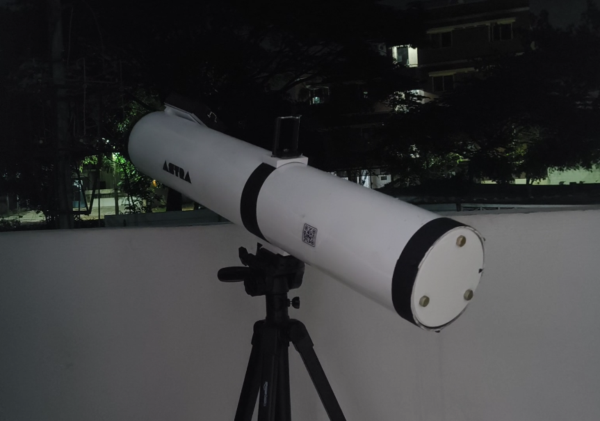
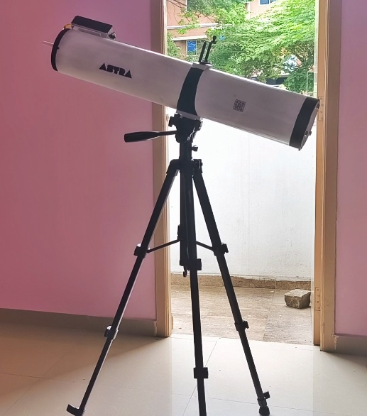
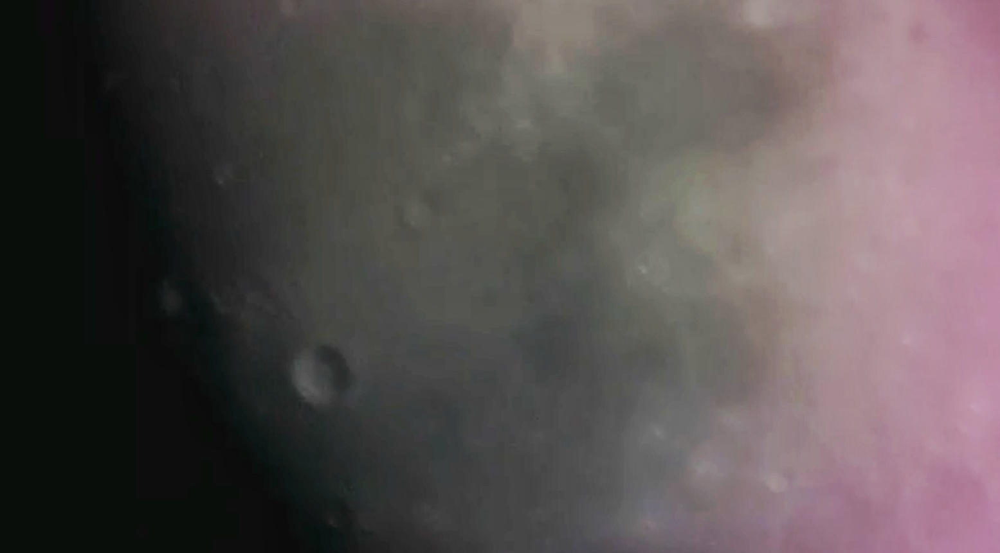
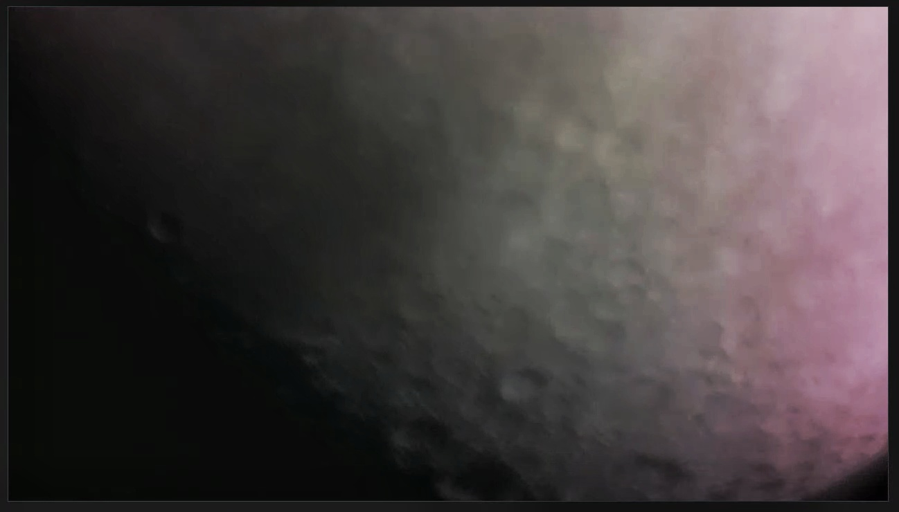
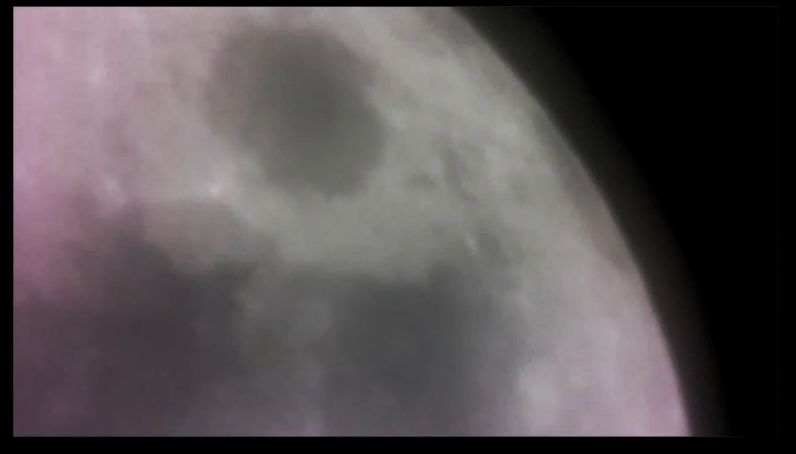

🔭 Astra Telescope
A DIY telescope project and its first successful images of the Moon.

Completed Astra Telescope mounted and ready for observation.

Side view of the telescope showing the optical tube assembly.

First successful lunar image captured through the Astra Telescope.

Enhanced view revealing additional surface details and craters.

Another capture showcasing the Moon.